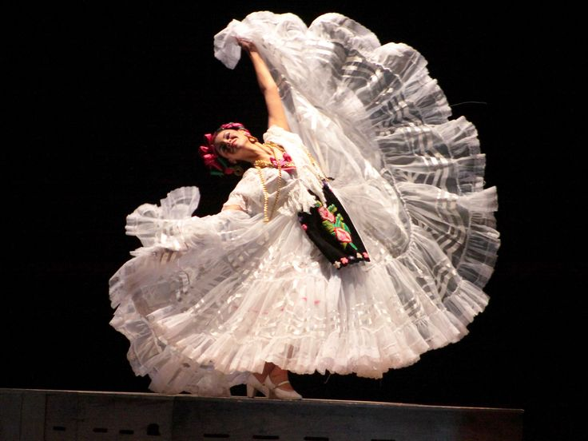
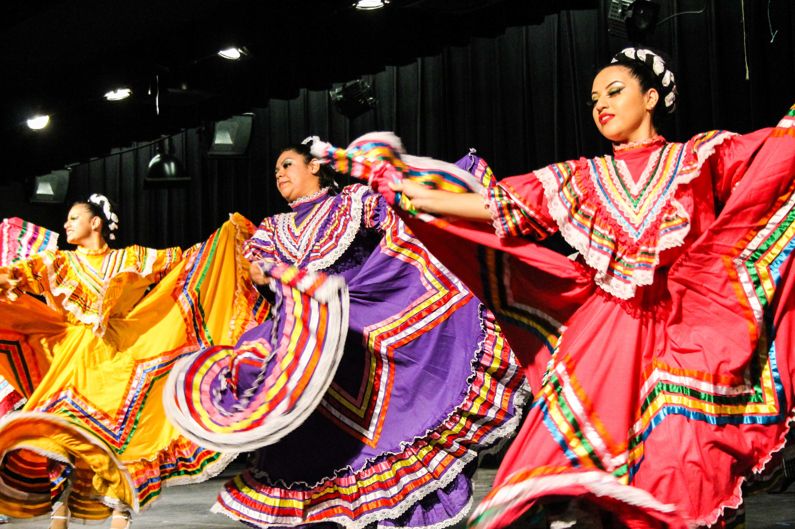
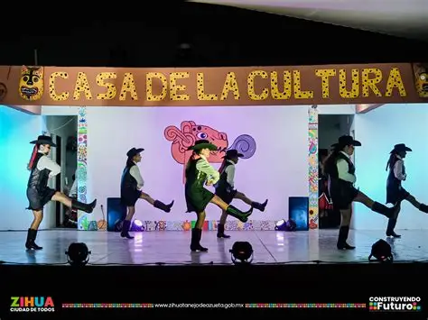

Dance Journey
I've always been put in either dance or sports growing up. I use to attend classes at the Carson event center for dance but I didn't feel any pasion for the type of dances I would try. I went from Ballet to Hip Hop and to many more. My mom started to lose hope and thought maybe dance wasn't my thing. This is until my mother found out about this folklorico group local to us. It was always my families dream to see me dance folklorico. I remeber crying about not wanting to go but my mother said if I didn't like the first class I wouldn't have to go back. I enjoyed the first class and from then on I attended every class. Now I have been dancing for folklorico for about 7 years and when times got tough I just found peace in folklorico. However I found struggle in myself at one point I wanted to quit because of how drained I was however I had talked with my dance instructor and she gave me advice and was listening to me talk about my problems. I remember taking a month break and the first practice back I was scared of what she would think of me or what she would say. Instead of all my fears she ended sitting with me again and listend to me talk about my life recently. She helped me through all of it. Even after all the sweat,tears,injuries, and the negatives I may have bumped into through my whole dance journey I still found my way back because it felt like my home away from home no matter what.


